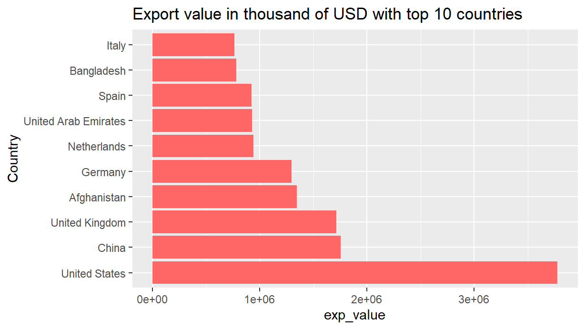

# A tibble: 6 × 4
ProductCode value_1000_USD PartnerName ReporterName
<dbl> <dbl> <chr> <chr>
1 10221 240. Afghanistan Pakistan
2 10221 0 Saudi Arabia Pakistan
3 10239 422. Afghanistan Pakistan
4 10511 380. Afghanistan Pakistan
5 10511 0.799 Oman Pakistan
6 10599 3417. Afghanistan Pakistan Exploring Export Data of Pakistan with its partner countries

Why R
There is an increasing recognition of reproducibility of research, though it has limited recognition in social sciences. The document in your hand is written in RMarkdown. RMarkown which can be used for pdf, html, word, PowerPoint/Slidy/Beamer Presentations, Webpages, LaTex and many others. Besides learning basics of R-coding, another objective of this workshop is understanding the importance of reproducibility. Building this new habit of reproducible work at times maybe little challenging occasionally. Getting rid of culture of copying and pasting, and sparing this time for doing data analysis and research is one of the objectives of this or coming workshops. Purpose is to help you to get away from this tedious activity so that you can spend more time doing science.
Uploaded data and required R packages
Understanding data sets requires many hours/days or in some cases weeks.There are many commercially available software but open source community based software have now dominated and R is one of these. R makes data understanding process as easy as possible through the dplyr package. It is one of the easiest solution for code-based data analysis. We will learn in this training how to do it. I have already uploaded videos for downloading packages and relevant information. video links….
I will explore the Export Data and will explain how one can use basic dplyr verbs for data wrangling. Here’s how to load in all required packages:
Exort Data Analysis
Rows: 92,950 Columns: 11 $ Nomenclature TradeValue in 1000 USD
Once data are uploaded, now to get an overview of this data, we display first few rows of data by recalling X_pk data. glimpse command helps to get an overall view of this data. str command will also describe data.
Rows: 92,950
Columns: 11
$ Nomenclature <chr> "H5", "H5", "H5", "H5", "H5", "H5", "H5", "H5…
$ ReporterISO3 <chr> "PAK", "PAK", "PAK", "PAK", "PAK", "PAK", "PA…
$ ProductCode <dbl> 10221, 10221, 10239, 10511, 10511, 10599, 105…
$ ReporterName <chr> "Pakistan", "Pakistan", "Pakistan", "Pakistan…
$ PartnerISO3 <chr> "AFG", "SAU", "AFG", "AFG", "OMN", "AFG", "OM…
$ PartnerName <chr> "Afghanistan", "Saudi Arabia", "Afghanistan",…
$ Year <dbl> 2017, 2017, 2017, 2017, 2017, 2017, 2017, 201…
$ TradeFlowName <chr> "Export", "Export", "Export", "Export", "Expo…
$ TradeFlowCode <dbl> 6, 6, 6, 6, 6, 6, 6, 6, 6, 6, 6, 6, 6, 6, 6, …
$ `TradeValue in 1000 USD` <dbl> 240.335, 0.000, 422.272, 380.257, 0.799, 3416…
$ value_1000_USD <dbl> 240.335, 0.000, 422.272, 380.257, 0.799, 3416…This indicate that there are 10 variables and 92951 observations. From having an overview of above mentioned variables, we are interested to select few of these variables. For this we use one of the verb select as follows:
| ReporterName | PartnerName | value_1000_USD | ProductCode |
|---|---|---|---|
| Pakistan | Afghanistan | 240.335 | 10221 |
| Pakistan | Saudi Arabia | 0.000 | 10221 |
| Pakistan | Afghanistan | 422.272 | 10239 |
| Pakistan | Afghanistan | 380.257 | 10511 |
| Pakistan | Oman | 0.799 | 10511 |
Or we can drop variables which are not required by using the same select verb but with -ve signs for the variables which we want to drop.
# A tibble: 6 × 8
ProductCode ReporterName PartnerName Year TradeFlowName TradeFlowCode
<dbl> <chr> <chr> <dbl> <chr> <dbl>
1 10221 Pakistan Afghanistan 2017 Export 6
2 10221 Pakistan Saudi Arabia 2017 Export 6
3 10239 Pakistan Afghanistan 2017 Export 6
4 10511 Pakistan Afghanistan 2017 Export 6
5 10511 Pakistan Oman 2017 Export 6
6 10599 Pakistan Afghanistan 2017 Export 6
# ℹ 2 more variables: `TradeValue in 1000 USD` <dbl>, value_1000_USD <dbl>Wait a minute, despite selection of desired variables or droping undesired variables, we have not lost orginal data. This is a very unique feature unlike some softwares where if we drop some variables, we cant re-use those unless we go back and open original file. If we type X_pk we will get same data having 10 variables with 92,951 rows.
Filter and select verb
One may use filter command to keep observations meeting certain criteria and then use select for keeping desired variables.
# A tibble: 6 × 4
ReporterName PartnerName value_1000_USD ProductCode
<chr> <chr> <dbl> <dbl>
1 Pakistan Afghanistan 15.2 10190
2 Pakistan Saudi Arabia 0 10221
3 Pakistan Saudi Arabia 0 10290
4 Pakistan United Arab Emirates 29.5 10410
5 Pakistan Saudi Arabia 0 10410
6 Pakistan Afghanistan 8.93 10420This table shows data only for 2018 year and have four variables selected.
# A tibble: 6 × 3
ProductCode Nomenclature value_1000_USD
<dbl> <chr> <dbl>
1 30199 H5 709.
2 30219 H5 5.07
3 30223 H5 11.4
4 30229 H5 8.57
5 30243 H5 1.68
6 30285 H5 36.2 # A tibble: 6 × 4
ReporterName PartnerName value_1000_USD ProductCode
<chr> <chr> <dbl> <dbl>
1 Pakistan China 709. 30199
2 Pakistan United States 24.3 30199
3 Pakistan China 5.07 30219
4 Pakistan China 11.4 30223
5 Pakistan China 8.57 30229
6 Pakistan United States 14.0 30229Ordering by using arranage function
# A tibble: 6 × 4
ReporterName PartnerName value_1000_USD ProductCode
<chr> <chr> <dbl> <dbl>
1 Pakistan China 586099. 520512
2 Pakistan United States 379967. 620322
3 Pakistan United States 345159. 630710
4 Pakistan United States 337448. 630260
5 Pakistan United Kingdom 219605. 630239
6 Pakistan United States 215608. 630210group_by and summarising
Rename variables

Summary
# A tibble: 3 × 2
PartnerName sum
<chr> <dbl>
1 China 1754391.
2 United Kingdom 1715553.
3 United States 3779145.Arrange and Arrange(desc()) For each year
# A tibble: 6 × 3
# Groups: PartnerName [3]
PartnerName Year sum
<chr> <dbl> <dbl>
1 United States 2019 4007399.
2 United States 2018 3779145.
3 United States 2017 3546689.
4 China 2019 1997217.
5 China 2018 1754391.
6 United Kingdom 2018 1715553.Group by product name
# A tibble: 2,942 × 3
# Groups: ProductCode [1,733]
ProductCode PartnerName sum
<dbl> <chr> <dbl>
1 520512 China 565848.
2 620322 United States 401733.
3 630260 United States 333286.
4 630710 United States 318770.
5 740319 China 258740.
6 100630 China 241029.
7 630210 United States 234804.
8 630239 United Kingdom 215302.
9 630239 United States 143067.
10 620322 United Kingdom 142536.
# ℹ 2,932 more rows# A tibble: 1 × 1
sum
<dbl>
1 406685.# A tibble: 10,516 × 3
# Groups: ProductCode [3,037]
ProductCode PartnerName Total_value
<dbl> <chr> <dbl>
1 520512 China 565848.
2 620322 United States 401733.
3 630260 United States 333286.
4 630710 United States 318770.
5 740319 China 258740.
6 620322 Spain 255310.
7 520942 Bangladesh 252258.
8 100630 China 241029.
9 630210 United States 234804.
10 100630 United Arab Emirates 229240.
# ℹ 10,506 more rows# A tibble: 2,831 × 3
# Groups: PartnerName [194]
PartnerName ProductCode sum
<chr> <dbl> <dbl>
1 Guinea-Bissau 100640 18013.
2 Comoros 100630 10115.
3 Comoros 252329 3681.
4 Guinea-Bissau 100630 3478.
5 Occ.Pal.Terr 100630 1239.
6 Gabon 630239 605.
7 Eritrea 210690 473.
8 Eritrea 220710 303.
9 Cuba 630260 248.
10 Cuba 520822 240.
# ℹ 2,821 more rows